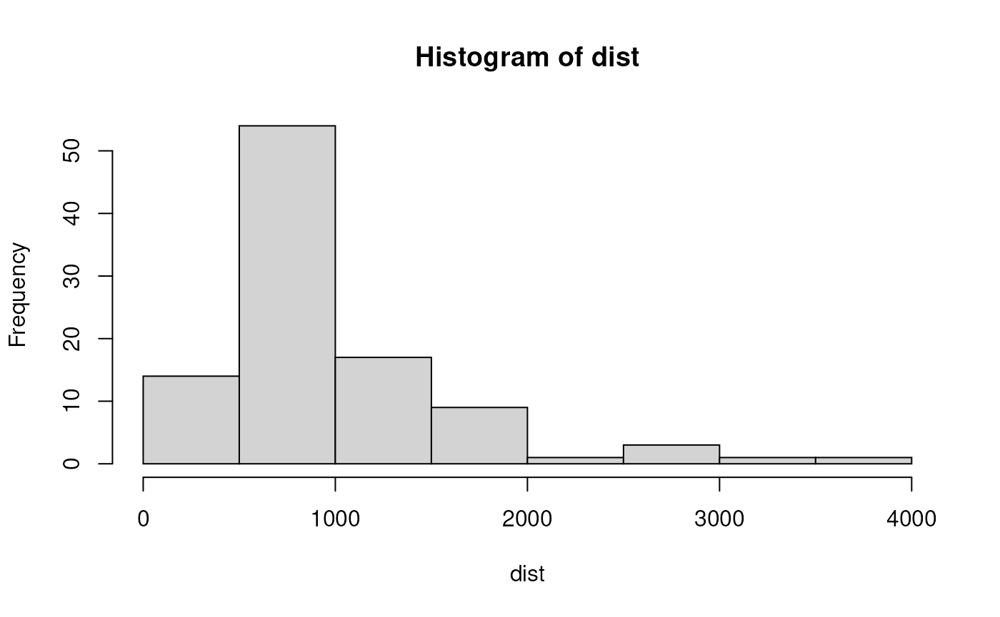

The distanceto package is designed to quickly sample distances from points features to other vector layers. Normally the approach for calculating distance to (something) involves generating distance surfaces using raster based approaches eg. raster::distance or gdal_proximity and subsequently point sampling these surfaces. Since raster based approaches are a costly method that frequently leads to memory issues or long and slow run times with high resolution data or large study sites, we have opted to compute these distances using vector based approaches. As a helper, there’s a decidedly low-res raster based approach for visually inspecting your region’s distance surface. But the workhorse is distance_to.
The distanceto package provides two functions:
distance_todistance_raster
# Enable the robitalec universe
options(repos = c(
robitalec = 'https://robitalec.r-universe.dev',
CRAN = 'https://cloud.r-project.org'))
# Install distanceto
install.packages('distanceto')distance_to
library(distanceto)
library(sf)
#> Linking to GEOS 3.9.1, GDAL 3.3.1, PROJ 8.0.1
# Load nc data
nc <- st_read(system.file("shapes/sids.shp", package="spData"))
#> Reading layer `sids' from data source
#> `/home/alecr/R/x86_64-pc-linux-gnu-library/4.1/spData/shapes/sids.shp'
#> using driver `ESRI Shapefile'
#> Simple feature collection with 100 features and 22 fields
#> Geometry type: MULTIPOLYGON
#> Dimension: XY
#> Bounding box: xmin: -84.32385 ymin: 33.88199 xmax: -75.45698 ymax: 36.58965
#> CRS: NA
st_crs(nc) <- "+proj=longlat +datum=NAD27"
# Set number of sampling points
npts <- 1e3
# Sample points in nc
ncpts <- st_sample(nc, npts)
# Select first 5 of nc
ncsub <- nc[1:5,]
# Measure distance from ncpts to first 5 of nc
dist <- distance_to(ncpts, ncsub, measure = 'geodesic')
# or add to ncpts
ncpts$dist <- dist
head(dist, 30)
#> [1] 59159.73 170372.41 239410.32 100642.25 112655.00 219361.44 120556.75
#> [8] 165470.20 36997.22 204245.47 81224.35 104191.92 175883.53 138352.96
#> [15] 192734.88 146158.76 208500.33 114880.88 164632.04 73676.32 209448.55
#> [22] 82645.85 94063.64 111207.91 114373.67 27710.88 143440.15 10248.95
#> [29] 95629.69 136262.55
hist(dist)
# Load seine data
data('seine', package = 'spData')
# Buffer seine by 1000 metres
bufseine <- st_buffer(seine, 1000)
# Set number of sampling points
npts <- 1e2
# Sample points within buffer seine
seinepts <- st_sample(bufseine, npts)
# Measure distance from seine points to seine
dist <- distance_to(seinepts, seine)
# or add to seine points
seinepts$dist <- dist
head(dist, 30)
#> [1] 1475.4729 804.7909 2965.4492 741.4175 1882.2771 941.2033 1506.2992
#> [8] 621.2957 579.0929 1643.1096 1581.4075 469.7743 636.9162 1432.3008
#> [15] 574.4903 714.2305 619.2407 596.5574 939.0630 1490.0131 294.1060
#> [22] 631.5090 2691.5918 941.1175 618.8345 959.0653 625.5747 854.7989
#> [29] 719.2472 914.5645
hist(dist)
distance_raster
library(raster)
#> Loading required package: sp
rdist <- distance_raster(seine, 1e4)
#> Warning in showSRID(uprojargs, format = "PROJ", multiline = "NO", prefer_proj
#> = prefer_proj): Discarded datum Unknown based on GRS80 ellipsoid in Proj4
#> definition
plot(rdist)